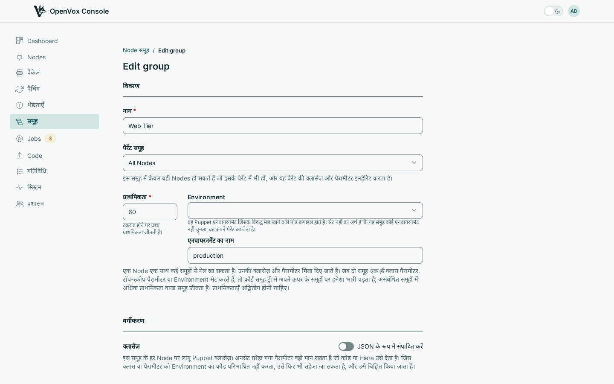

उपयोग
Nodes का वर्गीकरण करें
Facts से मेल खाने वाले या नाम से पिन किए गए Node समूहों के एक वृक्ष से तय कीजिए कि हर Node को कौन-सी क्लासें, पैरामीटर और Environment मिलें।
openvoxserver कंसोल से पूछता है कि हर Node कैसा होना चाहिए: उसमें कौन-सी क्लासें शामिल हों, किन पैरामीटरों के साथ, और उसका कोड किस Environment से आए। कंसोल अपने Node समूहों से उत्तर देता है। वर्गीकरण openvoxserver तक तभी पहुँचता है जब वह जुड़ जाए, और यह दोनों इंस्टॉल गाइडों में बताया गया है।
समूह देखने के लिए classifier:read चाहिए; उन्हें बनाने, बदलने और हटाने के लिए classifier:write।
समूह एक वृक्ष बनाते हैं
हर समूह का एक parent होता है। सबसे ऊपर All Nodes है, एक अंतर्निहित समूह जिसमें हर Node शामिल है। आप इसे हटा, इसका नाम बदल या इसे कहीं ले नहीं जा सकते, और इसमें कोई नियम या पिन किए गए Nodes नहीं होते, लेकिन आप इसे क्लासें, पैरामीटर और एक Environment दे सकते हैं, और तब वे पूरे फ़्लीट पर लागू होते हैं।
किसी समूह में केवल वही Nodes हो सकते हैं जो उसके parent में भी हों। इसलिए Linux Servers के नीचे का कोई समूह कभी Windows Node नहीं पकड़ता, चाहे उसका अपना नियम कुछ भी कहे, और समूह के Nodes हमेशा उसके parent के Nodes का उपसमुच्चय होते हैं। नया समूह सीधे All Nodes के नीचे जाता है, जब तक आप कोई दूसरा parent न चुनें।
किसी समूह को स्वयं अपने नीचे या अपने नीचे के किसी समूह के नीचे नहीं ले जाया जा सकता, और जिस समूह के नीचे अभी समूह हैं, उसे हटाया नहीं जा सकता: पहले उन्हें हटाइए या कहीं और ले जाइए।
जिस समूह पर कोई भूमिका दी गई है, उसे भी हटाया नहीं जा सकता, क्योंकि इससे भूमिका द्वारा दी गई पहुँच चुपचाप छिन जाएगी। पहले भूमिकाएँ पृष्ठ पर भूमिका से समूह हटाइए - देखें उपयोगकर्ता, भूमिकाएँ और टोकन।
समूह कैसे तय करता है कि वह किन Nodes पर लागू हो
कोई समूह किसी Node पर तब लागू होता है जब Node समूह के parent में हो और इनमें से कोई एक बात हो:
- Node नाम से उसमें पिन किया गया है, या
- Node के Facts समूह के मिलान नियम को पूरा करते हैं: उसकी सभी शर्तें, या उनमें से कोई एक, समूह जिस पर भी सेट हो।
जिस समूह में न कोई शर्त है और न कोई पिन किया गया Node, वह किसी भी Node पर लागू नहीं होता। खाली नियम का अर्थ जानबूझकर «सभी» नहीं रखा गया है, ताकि अधूरा समूह पूरे फ़्लीट पर क़ब्ज़ा न कर सके।
पिन समूह के अपने नियम को पलटता है, उसके parent को नहीं। जिस समूह के parent में कोई Node नहीं है, उस समूह में पिन किया गया वह Node समूह में नहीं होता, और समूह का पृष्ठ ऐसे पिन सूचीबद्ध करता है ताकि बेअसर पिन चुपचाप न रह जाए।
हर शर्त एक Fact की तुलना एक मान से करती है:
| ऑपरेटर | मेल खाता है जब Fact |
|---|---|
= |
मान के बराबर है |
!= |
मान से भिन्न है |
~ |
regular expression के रूप में मान से मेल खाता है |
> < >= <= |
उसी तरह तुलना करता है, जहाँ दोनों पक्ष संख्याएँ हों वहाँ संख्यात्मक रूप से |
Facts का नाम उनके पथ से होता है, संरचित Facts के लिए बिंदुओं के साथ: os.family, os.release.major, networking.domain।
समूह बनाएँ
- समूह खोलिए और एक समूह बनाइए।
- इसे नाम दीजिए, इसका पैरेंट समूह चुनिए, और यदि इसे Environment सेट करना है तो इसका Environment चुनिए। Environment एक dropdown है। सेट नहीं (जो बताता है कि तब समूह अपने parent से क्या विरासत में पाता है) चुनाव parent पर छोड़ देता है। openvoxserver द्वारा बताए गए Environments इसके नीचे सूचीबद्ध होते हैं। Other... ऐसे नाम के लिए text field खोलता है जो अभी सूची में नहीं है, जैसे कोई शाखा जिसे आपने अभी push किया है, या जब सूची लोड नहीं हो सकी।
- क्लासें जोड़िए, हर एक उसके ज़रूरी पैरामीटरों के साथ, और कोई भी top-scope पैरामीटर। नीचे क्लासें चुनें देखें।
- इसका मिलान नियम बनाइए, हर पंक्ति में एक शर्त: एक Fact पथ, एक ऑपरेटर और एक मान। चुनिए कि Node को सभी शर्तें पूरी करनी हैं या उनमें से कोई एक। संपादक बिना Fact पथ वाली शर्त, या compile न होने वाले regular expression को सहेजने से मना करता है, और दिखाता है कि कौन-सी पंक्ति गलत है।
- जिन Nodes को उनके Facts चाहे जो हों, समूह में होना चाहिए, उन्हें certname से पिन कीजिए।
- इसे एक प्राथमिकता दीजिए, फिर सहेजिए।


समूह सूची वृक्ष दिखाती है, हर समूह अपने parent के नीचे, साथ में यह कि हर एक इस समय कितने Nodes से मेल खाता है, इसलिए कुछ भी नहीं या सब कुछ से मेल खाने वाला नियम तुरंत दिख जाता है।
JSON के रूप में संपादित करें नियम को कच्चे JSON के रूप में दिखाता है, ताकि आप कोई नियम पेस्ट कर सकें या ऐसा ढाँचा लिख सकें जो पंक्ति-संपादक नहीं देता। इसकी जाँचें वही हैं जो पंक्ति-संपादक की: JSON के रूप में, या API से, सहेजा गया नियम जिसमें Fact पथ खाली हो या regular expression टूटा हुआ हो, स्वीकार कर लिया जाता है, और बस कभी मेल नहीं खाता।
क्लासें चुनें
कंसोल आपके deploy किए गए कोड द्वारा परिभाषित क्लासें openvoxserver से पढ़ता है, इसलिए समूह की क्लासें टाइप नहीं, चुनी जाती हैं।
- क्लासेज़ के अंतर्गत क्लास जोड़ें में टाइप करना शुरू कीजिए, क्लास चुनिए, और उसे जोड़िए।
- इसका कोई पैरामीटर सेट करने के लिए उसे पैरामीटर सेट करें के अंतर्गत चुनिए। दिखने वाला फ़ील्ड पैरामीटर के type के अनुरूप होता है: Boolean या Enum के लिए विकल्प, Integer या Float के लिए संख्या, String के लिए पाठ। उसकी टिप्पणी type और कोड का default दिखाती है। कोई भी अन्य type JSON के रूप में दर्ज होता है, इसलिए पाठ को double quotes चाहिए:
"value",["a", "b"]। - किसी पैरामीटर को छोड़ दीजिए ताकि कोड या Hiera द्वारा दिया गया मान बना रहे। उसी पर लौटने के लिए पैरामीटर हटा दीजिए।
क्लासें समूह के Environment से आती हैं: उसका अपना, या फिर Environment सेट करने वाले सबसे नज़दीकी parent का, या फिर production। पृष्ठ बताता है कि कौन-सा, और सूची कब पढ़ी गई। जो Node किसी दूसरे समूह से भी मेल खाता है जो अलग Environment सेट करता है, वह उसी के विरुद्ध compile होता है, जिसे यह समूह नहीं जान सकता।
सूची पाँच मिनट तक दोबारा उपयोग होती है और कोड deploy के बाद फिर से पढ़ी जाती है। क्लासेज़ रीफ़्रेश करें इसे तुरंत पढ़ता है, और इसके लिए classifier:write चाहिए।
openvoxserver हर Environment का अपना कैश रखता है। यदि वह Environments को अनिश्चित काल तक रखने के लिए सेट है, जैसा कंटेनर इमेज में है, तो नए कोड से जोड़ी गई क्लास तब तक नहीं दिखती जब तक वह कैश साफ़ न हो - वही सफ़ाई जो catalog को नया कोड देखने के लिए चाहिए। देखें कंटेनरों से इंस्टॉल करें।
JSON के रूप में संपादित करें क्लासों को कच्चे JSON के रूप में दिखाता है, ताकि आप उन्हें पेस्ट कर सकें।
कोड से मेल न खाने वाली क्लासें
कोई समूह ऐसी क्लास का नाम दे सकता है जिसे Environment परिभाषित नहीं करता, ऐसा पैरामीटर सेट कर सकता है जिसे क्लास घोषित नहीं करती, या ऐसा मान दे सकता है जो पैरामीटर के type में फ़िट नहीं होता। ऐसा तब होता है जब कोड में किसी क्लास का नाम बदला जाए या उसे हटाया जाए, या जब कोड deploy होने से पहले समूह सहेजा जाए।
समूह का पृष्ठ हर एक को चिह्नित करता है, और समूह सूची उस समूह पर क्लास बेमेल दिखाती है। ये केवल सलाह हैं:
- समूह जैसा है वैसा ही सहेजा जाता है। कुछ भी हटाया या बदला नहीं जाता।
- Nodes अब भी उस क्लास के साथ वर्गीकृत होते हैं। जिस Node के catalog को ऐसी क्लास चाहिए जो मौजूद नहीं है, वह
Could not find classके साथ compile होने में विफल होता है, जब तक कोड या समूह बदला न जाए। - केवल वही types जाँचे जाते हैं जिन्हें कंसोल जाँच सकता है। किसी अन्य type का मान कभी चिह्नित नहीं होता।
जब Environment का कोई manifest parse होने में विफल होता है, तो कुछ भी अनुपस्थित चिह्नित नहीं किया जाता, क्योंकि क्लास उसी manifest में हो सकती है। इसके बजाय पृष्ठ manifests और उनकी त्रुटियाँ सूचीबद्ध करता है।
जब सूची उपलब्ध न हो
पृष्ठ कारण बताता है, और क्लासें व पैरामीटर नाम से टाइप किए जाते हैं। कुछ भी चिह्नित नहीं होता, और सहेजना व वर्गीकरण सामान्य रूप से काम करते हैं। कारण:
- कंसोल का openvoxserver से कोई कनेक्शन नहीं है।
CONSOLE_PUPPET_SERVER_URLसेट कीजिए। - openvoxserver कंसोल को क्लासें पढ़ने की अनुमति नहीं देता। इंस्टॉल गाइड से नियम जोड़िए: कंटेनर या पैकेज।
- openvoxserver तक नहीं पहुँचा जा सका। यदि सूची पहले पढ़ी गई थी, तो वही पिछली सूची, संभवतः पुरानी के रूप में चिह्नित, दी जाती है।
जब समूह एक-दूसरे पर चढ़ते हैं
कई समूहों से मेल खाने वाले Node को उन सभी से सब कुछ मिलता है: हर क्लास, हर पैरामीटर। चूँकि किसी समूह का Node उसके ऊपर के हर समूह में भी होता है, इसलिए समूह वह सब विरासत में पाता है जो वे समूह सेट करते हैं और वह स्वयं नहीं करता।
जहाँ दो समूह एक ही चीज़ अलग-अलग सेट करते हैं - एक ही क्लास पैरामीटर, एक ही top-scope पैरामीटर, या Environment - वहाँ दो नियम, इस क्रम में, निर्णय करते हैं:
- कोई समूह अपने ऊपर के समूहों पर हमेशा भारी पड़ता है। child का मान उसके parent, उसके grandparent आदि के मान पर भारी पड़ता है, चाहे उनकी प्राथमिकताएँ कुछ भी हों।
- जिन समूहों में कोई भी दूसरे के ऊपर नहीं है, उनके बीच ऊँची प्राथमिकता जीतती है।
किसी समूह का स्तर कम से कम उसके parent जितना ऊँचा माना जाता है। मान लीजिए प्राथमिकता 10 वाला एक parent है, उसका प्राथमिकता 1 वाला child है, और प्राथमिकता 5 वाला एक असंबंधित समूह है, और तीनों एक Node से मेल खाते हैं। पहले नियम से child अपने parent पर भारी पड़ता है, और वह असंबंधित समूह पर भी भारी पड़ता है, क्योंकि उसका स्तर 10 माना जाता है: किसी समूह का परिष्कृत रूप हर उस चीज़ से ऊपर होता है जिससे वह समूह ऊपर है।
जब child ऊँची प्राथमिकता को ओवरराइड करता है
यदि कोई समूह अपने ऊपर के ऊँची प्राथमिकता वाले समूह से अलग कुछ सेट करता है, तो फिर भी child का मान ही उपयोग होता है, जबकि केवल प्राथमिकताएँ कुछ और कहतीं। कंसोल आपको बताता है: समूह का पृष्ठ खोलने या सहेजने पर वह parent और संबंधित मानों के नाम बताता है, समूह सूची उस समूह को प्राथमिकता को ओवरराइड करता है चिह्नित करती है, और बदलाव गतिविधि पृष्ठ पर दर्ज होता है। यह चेतावनी है, त्रुटि नहीं। कुछ भी अस्वीकार नहीं होता, और Nodes सामान्य रूप से वर्गीकृत होते हैं। इसे हटाने के लिए child को ऊँची प्राथमिकता दीजिए या दोनों में से किसी एक समूह से वह मान हटा दीजिए।
All Nodes पर सेट किए गए मान कभी इसे उत्पन्न नहीं करते: हर समूह से उन्हें ओवरराइड करने की अपेक्षा है।
कॉन्फ़िगरेशन डेटा सेट करें
कॉन्फ़िगरेशन डेटा वह डेटा है जिसे आपका कोड lookup() से पढ़ता है: ntp::servers, profile::dns::resolvers या किसी भी अन्य Hiera कुंजी का मान। इसे किसी Node समूह पर सेट करने से यह समूह के हर Node के लिए बदल जाता है, बिना किसी commit या कोड deploy के।
- समूह खोलिए, और क्लासेज़ के अंतर्गत कॉन्फ़िगरेशन डेटा (JSON) खोलिए।
- कुंजियों और मानों का एक JSON object टाइप कीजिए, उदाहरण के लिए
{"ntp::servers": ["0.pool.ntp.org"], "dns::timeout": 5}। मान कोई भी JSON हो सकता है: string, संख्या, boolean, सूची, object याnull। - समूह सहेजिए। Nodes इसे अपने अगले Puppet रन पर लेते हैं।
कुंजी में अधिकतम 255 अक्षर हो सकते हैं: अक्षर, अंक और _ : . -। एक समूह में अधिकतम 1000 कुंजियाँ हो सकती हैं, हर मान अधिकतम 64 KiB का। lookup_options कुंजी अस्वीकार की जाती है: इसी से Hiera merge व्यवहार सेट करता है, जो कॉन्फ़िगरेशन डेटा में उपलब्ध नहीं है।
Node को कौन-सा मान मिलता है
Node जिन समूहों में है, उन सबसे डेटा उन्हीं दो नियमों से मिलाया जाता है जिनसे क्लास पैरामीटर मिलाए जाते हैं (देखें जब समूह एक-दूसरे पर चढ़ते हैं): समूह अपने ऊपर के समूहों पर भारी पड़ता है, और असंबंधित समूहों के बीच ऊँची प्राथमिकता जीतती है। जीतने वाले समूह द्वारा सेट की गई कुंजी दूसरों की उसी कुंजी को पूरी तरह बदल देती है: यदि दो समूह app::opts को object पर सेट करते हैं, तो उनके objects कुंजी-दर-कुंजी नहीं मिलाए जाते।
कंसोल डेटा control repo पर भारी पड़ता है
जब कोई कुंजी यहाँ भी और आपके control repo के Hiera डेटा में भी सेट हो, तो कंसोल का मान उपयोग होता है। जो कुंजी कंसोल सेट नहीं करता, वह पहले की तरह control repo में मिलती है। इसलिए कॉन्फ़िगरेशन डेटा उस मान के लिए सही जगह है जिसे आप प्रति समूह ओवरराइड करना चाहते हैं, और बाक़ी सब कुछ के लिए control repo ही जगह बनी रहती है।
गोपनीय मानों के लिए नहीं
कॉन्फ़िगरेशन डेटा सादे पाठ के रूप में संग्रहीत होता है और Node समूह देख सकने वाले हर व्यक्ति (classifier:read) को दिखाया जाता है। इसमें पासवर्ड या कुंजियाँ न रखें। गतिविधि पृष्ठ और ऑडिट लॉग दर्ज करते हैं कि कौन-सी कुंजियाँ बदलीं, उनके मान कभी नहीं।
यदि किसी Node का रन विफल हो
openvoxserver हर बार catalog compile करते समय कंसोल से Node का डेटा माँगता है। यदि कंसोल उत्तर नहीं दे पाता, तो अनुपस्थित मानों से catalog बनाने के बजाय compile कंसोल का नाम बताने वाली त्रुटि के साथ विफल होता है। इंस्टॉल गाइड दिखाते हैं कि सर्वर को पूछने के लिए कैसे सेट अप किया जाता है।
जाँचें कि किसी Node को क्या मिलता है
किसी समूह का पृष्ठ उन Nodes को सूचीबद्ध करता है जिनसे वह इस समय मेल खाता है। किसी Node को अंततः जो मिलता है, वह हर मेल खाने वाले समूह का मिश्रण है, और वह पूरा उत्तर दिखाने वाली एकमात्र जगह स्वयं enc-bridge है: इंस्टॉल गाइडों के अनुसार openvoxserver होस्ट पर उससे पूछिए, और वह ठीक वही छापता है जो openvoxserver को बताया जाता है। किसी Node का कॉन्फ़िगरेशन डेटा अलग है: उसी टोकन के साथ GET /api/v1/enc/<certname>/data उसे लौटाता है।
वर्गीकरण Node के अगले Puppet रन पर प्रभावी होता है। इसे अभी लागू करने के लिए समूह के पृष्ठ से रन शुरू कीजिए, जो समूह से मेल खाने वाले हर Node पर Puppet चलाता है; देखें Jobs चलाएँ।
किसी समूह में हर बदलाव, उसे करने वाले के नाम के साथ, गतिविधि पृष्ठ पर दर्ज होता है।
वृक्ष रहित संस्करण से अपग्रेड करना
अपग्रेड करने से किसी Node का वर्गीकरण नहीं बदलता। हर मौजूदा समूह All Nodes का सीधा child बन जाता है, अपना नियम, पिन और प्राथमिकता बनाए रखता है, और पहले की तरह अपनी सभी शर्तों पर मेल खाता है।
यदि आपके पास पहले से "All Nodes" नाम का समूह था, तो उसका नाम बदलकर All Nodes (previous) कर दिया जाता है और वह अपने नियम के साथ ठीक पहले जैसा चलता रहता है। उसे अंतर्निहित समूह में नहीं बदला जाता, क्योंकि इससे उसकी क्लासें उन Nodes पर लागू हो जातीं जिनसे उसका नियम मेल नहीं खाता था। उसकी जाँच कर लेने के बाद आप उसकी क्लासें अंतर्निहित All Nodes पर ले जाकर उसे हटा सकते हैं।
यदि आप कई कंसोल इंस्टेंस चलाते हैं, तो एक समूह को दूसरे के नीचे रखने से पहले उन सभी का अपग्रेड पूरा कर लीजिए। पुराने संस्करण पर चल रहा इंस्टेंस parents को अनदेखा करता है और केवल प्राथमिकता से वर्गीकरण करेगा। देखें अधिक इंस्टेंस चलाएँ।